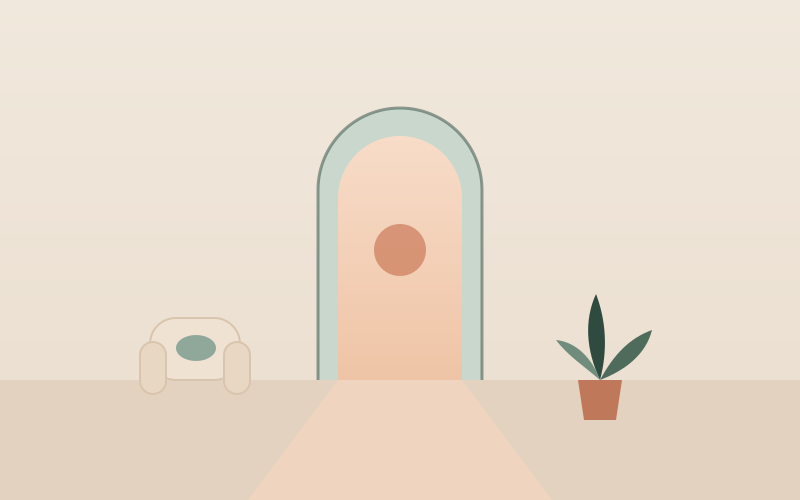
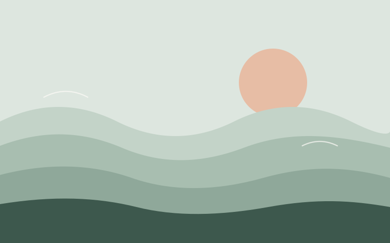
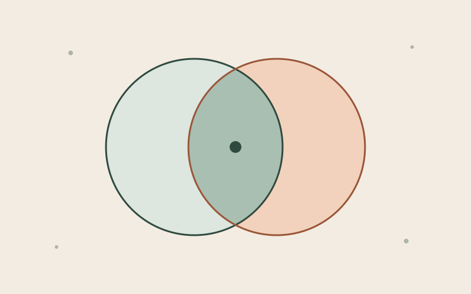

Klinik Psikolog · [İlçe], [Şehir]
Kendinize alan açmanın zamanı.
Kaygı, ilişkiler, kayıplar ya da hayatın ağırlaştığı dönemlerde; yargılanmadan anlaşıldığınız, güvenli ve sakin bir terapi alanı. Yetişkinlerle yüz yüze bireysel psikoterapi.
- Yüz yüze seanslar
- Yetişkinler (18+)
- 50 dakikalık seanslar
Terapiye başlamak için her şeyin çok kötü olması gerekmiyor. Bazen sadece anlaşılmaya, düşüncelerinizi toparlamaya ve kendinize biraz daha şefkatle bakmaya ihtiyaç duyarsınız.
Çalışma alanları
Size nasıl eşlik edebilirim?
Yetişkinlerle aşağıdaki konularda bireysel psikoterapi çalışmaları yürütüyorum. Yaşadığınız zorluğun buraya uyup uymadığından emin değilseniz ön görüşmede birlikte değerlendirebiliriz.
-
Kaygı ve panik
Sürekli endişe, panik atak, bedensel gerginlik ve kaçınma döngüleriyle baş etmek.
Devamı -
Depresif duygu durum
İsteksizlik, umutsuzluk, enerji kaybı ve kendini değersiz hissetme.
Devamı -
Travma ve zorlayıcı yaşantılar
Geçmişin izlerini güvenli bir tempoda ele almak ve bugünü güçlendirmek.
Devamı -
İlişkiler ve bağlanma
Tekrarlayan ilişki örüntüleri, sınır koyma, güven ve yalnızlık.
Devamı -
Yas ve kayıp
Bir kaybın ardından yasın kendi doğal seyrinde ilerlemesine alan açmak.
Devamı -
Özgüven ve öz-değer
İçteki eleştirel sesi yumuşatmak, kendine şefkatle bakabilmek.
Devamı -
Stres ve tükenmişlik
İş ve yaşam yükü altında dengeyi, sınırları ve dinlenmeyi yeniden kurmak.
Devamı -
Yaşam geçişleri
Ayrılık, taşınma, kariyer değişikliği gibi dönüm noktalarında yön bulmak.
Devamı
Çalışma alanım dışında kalan ihtiyaçlarınız için sizi uygun meslektaşlarıma yönlendirebilirim.
Yaklaşımım
Bilimsel temelli, insana odaklı.
Her insanın hikâyesi farklıdır; bu yüzden terapiyi hazır bir kalıba göre değil, sizin ihtiyaçlarınıza göre şekillendiririm. Etkinliği araştırmalarla desteklenen yöntemleri, sıcak ve güvenli bir terapötik ilişki içinde kullanırım.
- Bilişsel Davranışçı Terapi
- Şema Terapi
- EMDR
- Kabul ve Kararlılık Terapisi
- 01
Güvenli bir ilişki
Terapinin en güçlü unsurlarından biri, danışan ile terapist arasındaki güvene dayalı ilişkidir. Burada kendiniz olabilirsiniz.
- 02
Birlikte belirlenen hedefler
Neyin değişmesini istediğinizi birlikte netleştirir, süreci düzenli aralıklarla birlikte değerlendiririz.
- 03
Gizlilik ve etik
Paylaştıklarınız mesleki etik ilkeler ve yasal düzenlemeler çerçevesinde gizli tutulur.
Süreç nasıl işler?
İlk adımdan düzenli seanslara
Terapiye başlamayı düşünmek bile başlı başına bir adım. Belirsizlik kalmasın diye sürecin her aşamasını açıkça paylaşıyorum.
- 01
İletişime geçin
WhatsApp, telefon ya da randevu formu üzerinden bana ulaşın. Size en kısa sürede dönüş yaparım.
- 02
Kısa ön görüşme
Telefonda kısa bir görüşmeyle beklentilerinizi dinler, sürecin size uygun olup olmadığını birlikte değerlendiririz.
- 03
İlk seans ve değerlendirme
İlk seanslarda sizi ve yaşadıklarınızı tanır, terapiden beklentilerinizi ve hedeflerinizi netleştiririz.
- 04
Düzenli seanslar
Seanslar genellikle haftada bir ve 50 dakikadır. İlerlemeyi düzenli aralıklarla birlikte gözden geçiririz.
İlk seansta neler olacağını merak ediyorsanız hazırladığım rehbere göz atabilirsiniz.
Terapi süreci rehberi
Yüz yüze[İlçe], [Şehir]
Tanışalım
Merhaba, ben Hande.
Klinik psikoloğum. Yetişkinlerle kaygı, depresif duygu durum, ilişki sorunları ve zorlayıcı yaşam deneyimleri üzerine bireysel psikoterapi çalışmaları yürütüyorum.
Terapiyi, insanın kendini güvende hissettiğinde değişimin mümkün olduğu bir alan olarak görüyorum. Bilimsel temelli yöntemleri; sabır, merak ve şefkatle bir araya getirmeye özen gösteriyorum.
-
Klinik Psikoloji Yüksek Lisansı (tezli)[Üniversite adı] · [Yıl]
-
Psikoloji Lisansı[Üniversite adı] · [Yıl]
-
Terapi eğitimleri[Eğitim adı] · [Eğitim adı] · [Eğitim adı]
Küçük bir mola
Şu an zorlanıyorsanız, bir dakika nefes alalım.
Yavaş ve düzenli nefes, pek çok kişiye bedenini sakinleştirmede yardımcı olur. 4 saniye nefes alın, 4 saniye tutun ve 6 saniyede yavaşça verin.
Bu egzersiz terapinin yerini tutmaz. Baş dönmesi ya da rahatsızlık hissederseniz bırakın ve normal nefesinize dönün.
Ofis
Sakin bir oda, yüz yüze seanslar.
Seanslarımı yalnızca yüz yüze, aşağıdaki adreste bulunan ofisimde gerçekleştiriyorum. Ofis, gizliliğinizi gözeten sessiz bir ortam olarak düzenlenmiştir.
-
Adres [Açık adres]
[İlçe] / [Şehir] -
Ulaşım[En yakın metro / otobüs durağı] – yürüyerek [X] dakika
-
Çalışma saatleriHafta içi 10.00–19.00 · Cumartesi 10.00–15.00 (randevu ile)
-
Erişilebilirlik[Asansör / giriş katı / otopark bilgisi]
Harita Google Haritalar'dan yüklenir. Gizliliğiniz için, siz istemedikçe yüklenmez; butona tıkladığınızda Google'a bağlanılır.
Yazılar
Kendinizi anlamaya yardımcı okumalar
-

Terapi süreciTerapiye ilk kez başlarken: İlk seansta neler olur?
İlk seansta neler konuşulur, nasıl hazırlanılır ve kaygılanmak neden çok doğaldır?
-

KaygıKaygı ne zaman destek almayı gerektirir?
Kaygı doğal bir duygudur. Peki ne zaman profesyonel destek almayı düşünmeli?
-

RehberPsikolog, klinik psikolog ve psikiyatrist: Farkları neler?
Kime, ne zaman başvurulur ve bu uzmanlar birlikte nasıl çalışır?
Sık sorulanlar
Aklınızdaki sorular
Burada yanıtını bulamadığınız her soru için bana yazabilirsiniz.
Tüm sorularSeanslar ne kadar sürer, ne sıklıkla yapılır?
Seanslar 50 dakika sürer ve genellikle haftada bir yapılır. Sıklık, ihtiyaçlarınıza ve sürecin aşamasına göre birlikte değerlendirilir.
Online seans yapıyor musunuz?
Hayır. Şu an seanslarımı yalnızca yüz yüze, ofisimde gerçekleştiriyorum.
Konuştuklarımız gizli kalır mı?
Evet. Paylaştıklarınız mesleki etik ilkeler ve yasal düzenlemeler çerçevesinde gizli tutulur. Gizliliğin yasal sınırlarını (örneğin sizin ya da bir başkasının hayatının ciddi risk altında olması) ilk seansta açıkça konuşuruz.
Seans ücreti hakkında nasıl bilgi alabilirim?
Güncel ücret ve ödeme bilgisi, randevu öncesinde iletişim sırasında sizinle paylaşılır.
Psikiyatriste de gitmem gerekir mi?
Her zaman değil. Değerlendirme sonucunda ilaç desteğinin faydalı olabileceği düşünülürse, sizi bir psikiyatri uzmanına yönlendiririm ve gerekirse süreci birlikte yürütürüz.
Hazır olduğunuzda, buradayım.
İlk adımı atmak çoğu zaman en zor olanıdır. Bana dilediğiniz kanaldan ulaşabilirsiniz; size uygun bir zamanı birlikte planlayalım.
Mesajlarınıza genellikle bir iş günü içinde dönüş yapıyorum.